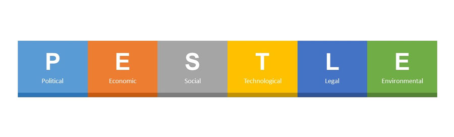

2 PESTLE analysis
When developing strategies and plans, the senior decision-makers will evaluate and analyse the impact of all relevant external and internal factors. They may prepare a PESTLE and/or SWOT analysis. PESTLE stands for:
P – political
E – economic
S – social
T – technological
L – legal
E – environmental.
Collecting data in a logical fashion enables senior managers and directors to review the organisation’s vision and purpose, the internal and external influences, and which decisions they need to make to adapt to changes.
The table below shows the types of influence covered by a PESTLE analysis with some examples:
TABLE TO GO HERE